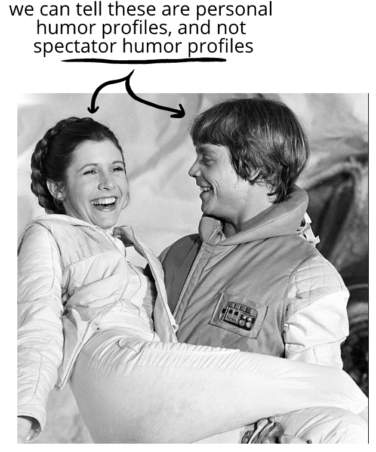
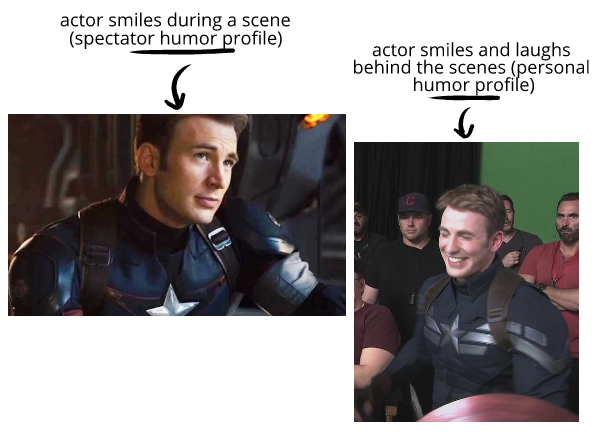
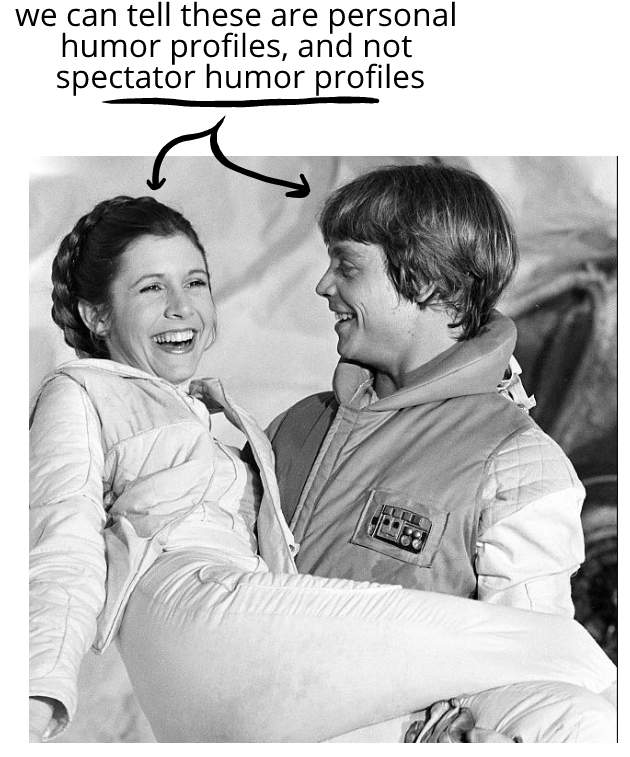
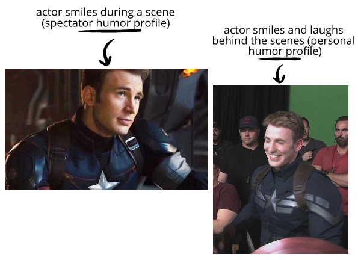

Last chapter we looked at spectator entertainment. In this chapter, we’ll look at how artists, actors, characters, and so on depict humor in spectator entertainment—
Consider:
We said before that each person has a humor profile. Our humor profile is how we express humor tells, specific to ourselves.
But if we act in a play, we won't transplant our actual humor profile to the stage wholesale. Instead, we'll use a spectator humor profile.
We can usually tell the difference between the actor
 



We don’t always notice how artificial acted humor is until someone points it out—but then it's something that's hard to unsee.
We'll be talking more about spectator humor profiles throughout this chapter.